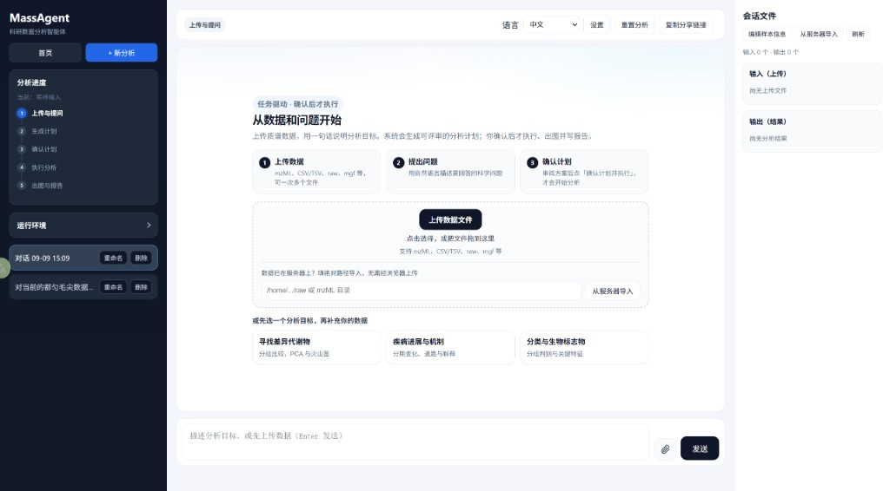
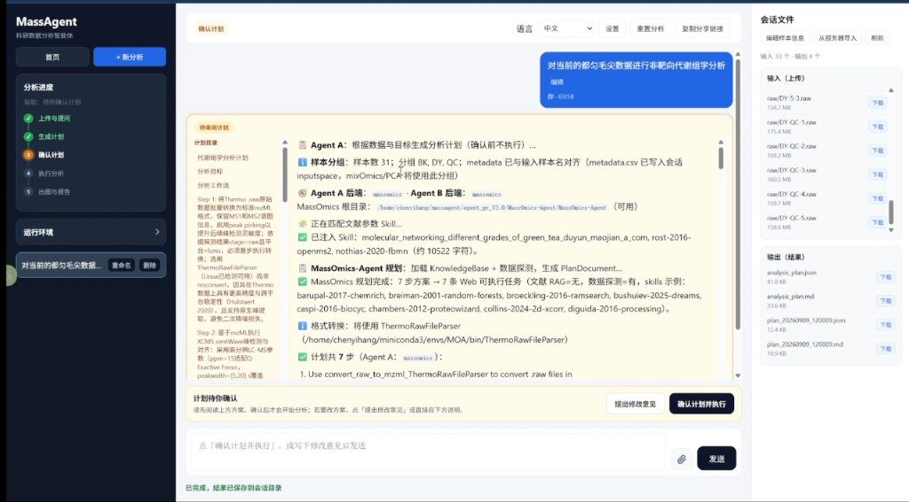
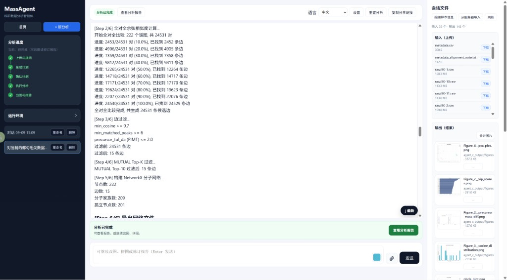
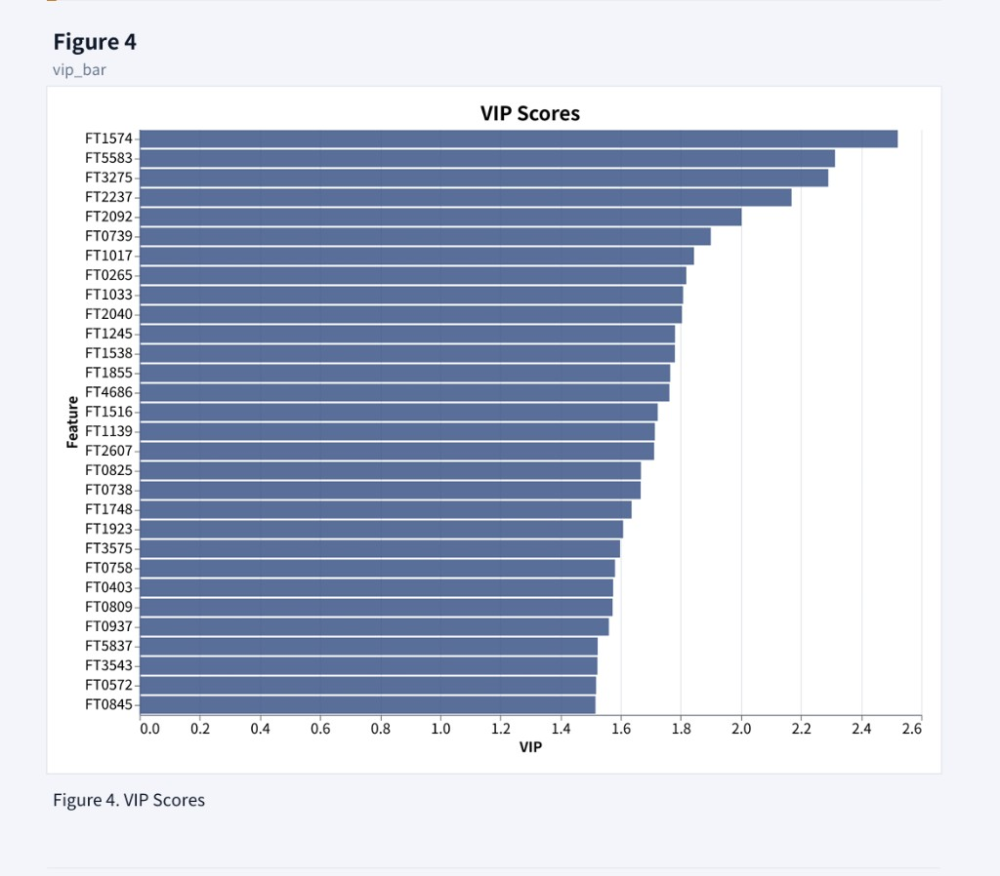
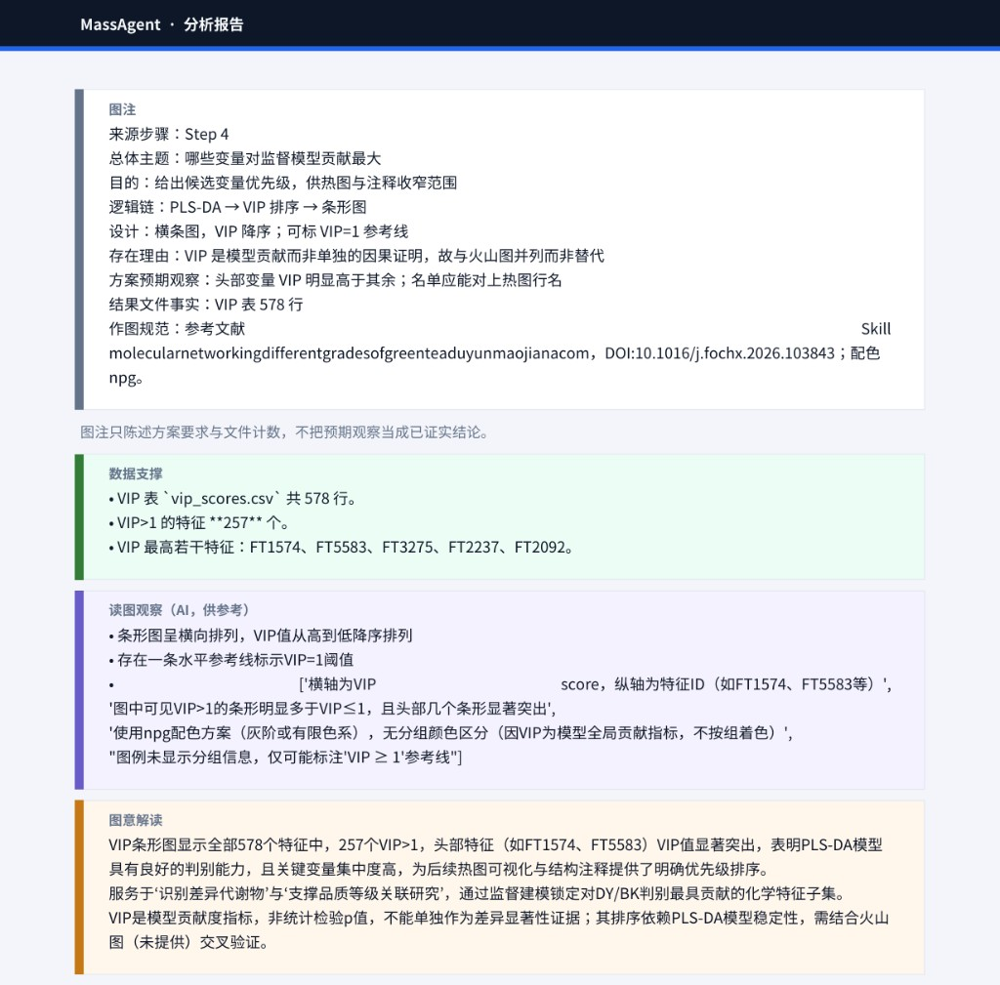

分析规划
解析样本分组与任务，匹配文献方法学，拆解为可网页执行的步骤（含 ThermoRawFileParser、峰处理、网络、统计等）。
入 数据 + 问题 → 出 可评审方案
产品形态
侧栏五步进度、会话历史、输入/输出文件面板与聊天式交互同屏；支持拖放上传、服务器路径导入 RAW、中英文界面与设置项。

功能
状态机约束：未确认不得启动执行；重置会终止任务并清空会话工作区。
输入 RAW / metadata 与输出 PNG、计划 md/json、结果 CSV 同列展示，支持合并图片。
分析完成后仍可继续对话修改图表或报告，而不是一次性黑盒输出。
侧栏展示 R / 转换器等依赖探测，降低「装了却找不到」的排查成本。
实现
网页对用户透明地编排三个角色；分析计划文档是 A→B→C 的契约。规划可注入文献参数 Skill，执行调用质谱与统计工具栈。
解析样本分组与任务，匹配文献方法学，拆解为可网页执行的步骤（含 ThermoRawFileParser、峰处理、网络、统计等）。
入 数据 + 问题 → 出 可评审方案
按锁定计划逐步调用工具，输出余弦过滤、分子网络（NetworkX）、PCA / VIP 等标准化结果文件与逐步日志。
入 方案 + 数据 → 出 分析结果
按方案生成 Figure，并输出图注、数据支撑、读图观察与图意解读；支持改图、拼图与报告入口。
入 方案 + 结果 → 出 图 + 报告
实例
真实产品界面与结果：31 个 Thermo RAW（BK / DY / QC），从计划确认到分析完成、VIP 图与报告解读。
识别样本与 metadata 对齐，注入文献 Skill（如毛尖绿茶、分子网络等方法学），拆成多步可执行任务；用户可「提出修改意见」或「确认计划并执行」。

逐步日志可见（如全谱余弦 2 万+ 边过滤、MUTUAL Top-K、NetworkX 建网：222 nodes / 15 edges）。完成后可一键打开分析报告，右侧图库含 PCA、VIP、质谱差分布等。

PLS-DA VIP 条形图（Figure 4）：特征按重要性排序，用于指示对分组判别贡献最大的化学特征（需与火山图等交叉验证）。

报告不仅贴图，还分栏给出图注（主题 / 逻辑 / 设计）、数据支撑（如 vip_scores.csv、VIP>1 特征数）、AI 读图观察与图意解读，便于科研人员复核。

工具能力